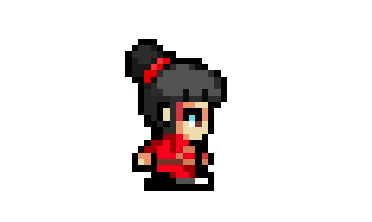
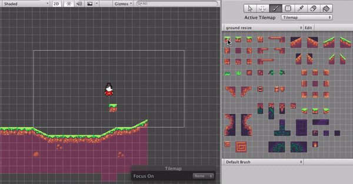
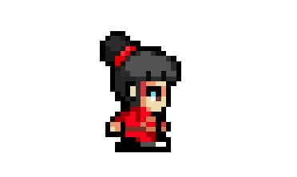
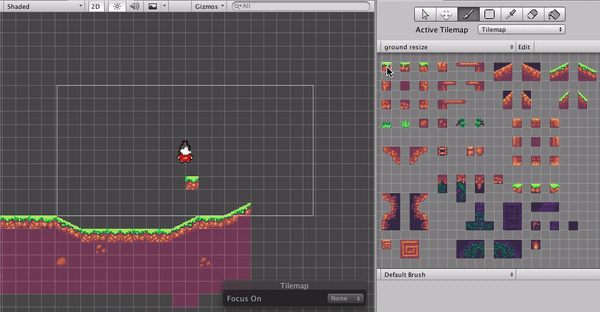

NeKu an effort to save a language

Neku
Thesis One Final Project
Completion Time: 1 month
Saving a dying culture through games
My interest lies in history, culture and technology. So, for my thesis project I was looking into topics by which I could integrate all of them into one. I am interested in knowing how some things came to be and by what ways are people still following them from the ancient times. They can be festivals, traditions, stories from the past etc. I am from an ethnic community called Newars of Nepal. They take up 5.6% of the total population.
Even though the community is small, they are rich in culture. They have their own unique festivals, architecture and language. However, since the past few years there have been sharp decline in the interest of young people in these ancestral elements.

I made a digital game that highlights Newari Culture and Language so that the players will be able to learn some words in the process of playing. During the testing phase of my game, I was asked why would people want to play this game despite knowing that the language was about to go extinct and why would they want to invest their time despite knowing that it won’t be useful for them for any purposes. My answer to that question was, Newari Language is deeply inhibited in Newari people and culture, if this language were to go extinct, the future Newari generation would feel lost and have a sense of identity crisis and it is very likely possible that they would blame us for not having continued using it and done anything to prevent that from happening. So, my project reflects my own feeling of being lost when I found out that I could neither read nor write my own ethnic language. Since, Newari language defines my root and my ancestry, I felt that I should step forward and make something rather than me being a bystander and watching my language become extinct.
According to UNESCO, not only Newari language but as many as half of the world’s 7,000 languages are expected to be extinct by the end of this century; it is estimated that one language does out every 14 days. So, being a part of this century while some of these endangered language still exists, I intend to attract young generation so that my ethnic language would not go extinct at the end of this century. In the case of Written Newari Language, our Grandparents were mostly farmers and they were illiterate so even though they did well passing down the spoken language, they had no means of teaching written Newari language to their kids. However, even if they could afford to go to school then, they would be taught in Nepali. So, in a way, they had little or no means of learning the written language.
When I first started the project, I was focused on Newari Language and how I can teach the Newari youths to read and write in Newari. However, as I took interviews and researched more about the topic of language, my focus shifted towards introducing words rather than teaching the language. I found out through series of interviews that language is not a singular element there are histories and cultures associated with it. So, my main goal for this project now is to show cultural appreciation and not language.
Prototypes
Board Game
For the first prototype of my Newari language preservation project, I made a board game to check how the players will recognize patterns of letters to combine them into correct order to make a word.
I took the board game Scrabble as one of my precedent where you make word out of letters. Making a word out of letters if done consistently would help the players to recognize patterns and ultimately memorize that word. My other precedent was Snakes and Ladders board game where the players had to climb up ladders to go few blocks ahead or drop down few blocks if they are bitten by a snake. The mechanism of being bitten by a snake, dropping the blocks and replaying to go up the blocks is what I found useful in my board game because repetition of putting forward the letters to make the words is my way of making them recognize the words.
The components of my board game are:
Board, Dice, Player block, Letter cards
- The boxes are numbered in Newari and below each is their english number translation
- The black masked creature are called “Khya”, a term used to describe a ghostly creature in Newari mythology. Any encounter with them is followed by severe illness and even death.

Gameplay (Two Player Game)
• The players start from the bottom right side
• They will roll the dice and pick up a word card
• They will move their “block” respective of the number on the rolled dice
• If there is a door along the way as they move their block, they will have to spell out the words “Ko le ya” meaning “open” with the cards they collected.
• The clues are written above the doors, these are hidden when they reach the second door. So, the players will have to remember the combination of the words.
• Encounter with “Khya” would cause the players to drop two steps down.
Findings
The user test showed that the players memorized the words according to their curves, lines and its repetition. Before playing the board game, I made them memorize the individual words as well as their their sound and pronunciation. However, they were able to recognize the visuals easier than the sound.
The board game as it is now only focuses on one word which is the Newari word for “open”. So, the future iteration would be to include more words to further know the pattern recognition of the players in one game. The strategy is to make the learning process seamless by making the gameplay fun so that the players would learn the letters without them knowing that they are learning.
Digital Game 1
This is the first prototype to check if picking up the letters and arranging them is going to be feasible and easy for the player. After testing, this turned out be a rather complicated step because the player had to jump with the letter block and dropping them in correct other was not easy.
Digital Game 2
For my second digital prototype, I focused on the character development. I took Kumari, as my main character. Kumari is a traditional practice in Newari culture where a young girl is revered as a living goddess and believed to have power to protect the nation from evil forces. However, designing the character and the environment took a really long time, so I decided to focus on the game mechanics.
 




Digital Game 3: NeKu
Focusing on the game mechanics for the game, I listed few of the basic interactions below:
• Pick up the letters and arrange them in the correct order to open the gate
• Shoot enemies to get to the door
• Each level will consist of a new newari word that the player has to arrange to go to the next level
• Use the mouse to shoot, the arrow keys to move and press the key “E” to pick up the words

The players will be introduced a new Newari word through out the game. This is one of the newari word for Fire. The character is going to shout “Mi” everytime they shoot fire so this word will be constantly reminded to the player.

Findings


After my user test in Nepal and doing the play test at the thesis pop up show, some of the responses I got were that the controllers were hard to navigate and that there needs to be a storyline as to why they are arranging the letters and killing the enemies. Even though I had put instructions in the first to stages mentioning the game mechanics, the players seemed to click through without reading them. Some of the suggestions were to include a summary of all the newari words used in the game along with their english translation.
So, my next iteration for this project would be to create a storyline, add new levels and making the graphics with elements from Newari culture.